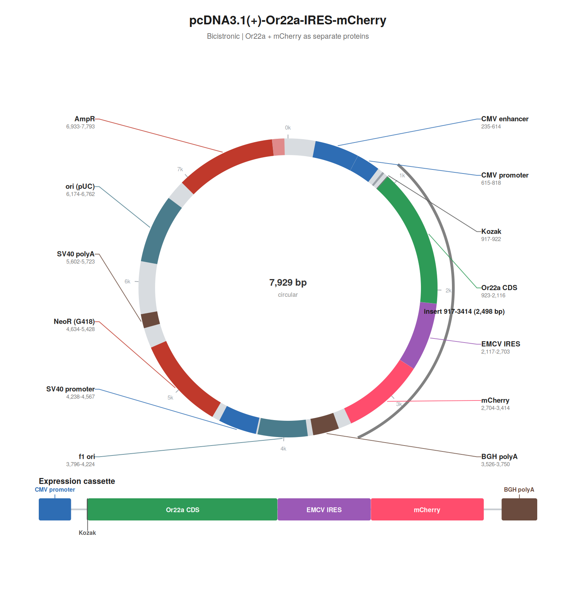
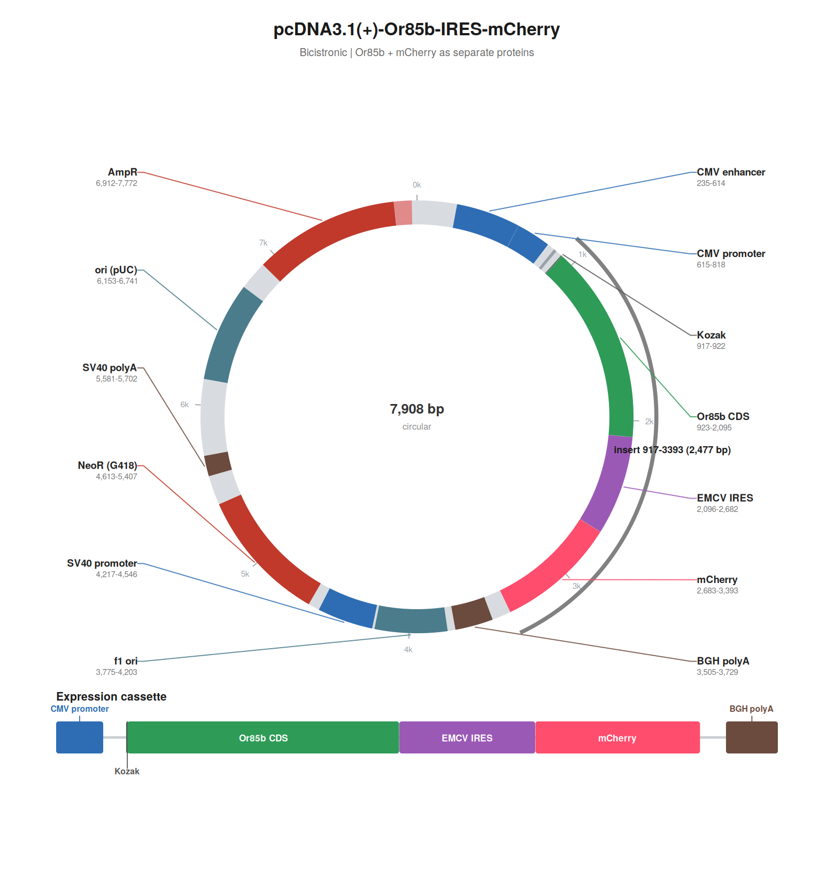
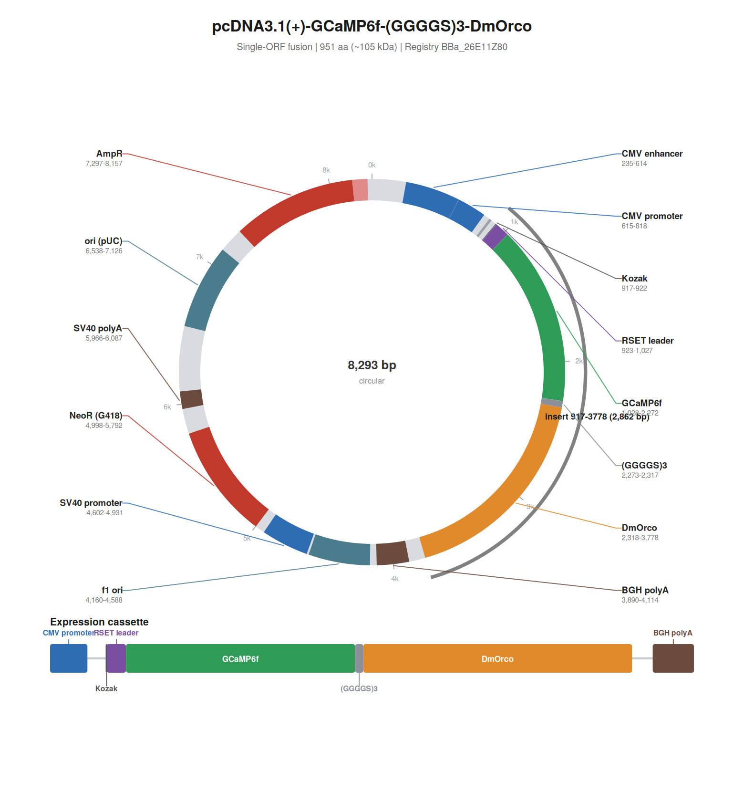
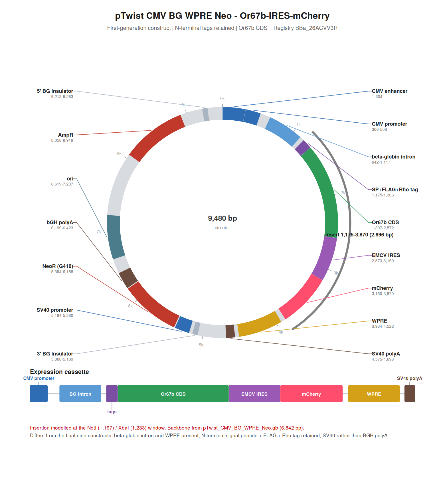

The AeroSense collection
A modular living-cell odor panel: nine interchangeable sensing composites,
one shared reporting module (BBa_26E11Z80, GCaMP6f–Orco),
plus supporting basic and reused parts (EMCV IRES, mCherry).
Insect OR–Orco biology is owned by
Design · how AeroSense senses — one sentence here: ligand-gated OR/Orco channels feed a designed GCaMP6f fluorescence readout.
- Sensing 9 composites Swap only the OR CDS / specificity module.
- Reporting 1 shared module GCaMP6f–(GGGGS)3–DmOrco stays fixed.
- Support Basics + 2 reused OR CDS parts, Orco, GCaMP6f, linker, IRES, mCherry.
mCherry is a QC / expression marker beside the channel, not the AeroSense measurement (Design · mCherry).
Build the biological sensor
Explore how genetic parts become proteins and how those proteins form the sensing system.
Choose a tuning receptor
Selecting a receptor updates only the OR / specificity module in the sensing cassette. The reporting cassette does not change.
Without JavaScript, open each composite in the catalogue: Or7a, Or22a, Or35a, Or42a, Or59b, Or67a, Or85b, Or98a, Or19a.
Sensing composite in view
Or7a-IRES-mCherry
Only the OR CDS changes. Shared reporting module: GCaMP6f–Orco (BBa_26E11Z80). Schematic topology does not change with receptor identity.
DNA
Two constructs
Click a block to open Registry metadata. Backbone features (CMV, BGH poly(A)) are pcDNA3.1(+) annotations, not registered AeroSense parts.
Translation products
Translation products
From transcript to protein
Module A
Two separate translation products from one bicistronic transcript.
IRES is an RNA translation element; not a protein product.
Module B
One fusion protein.
GCaMP6f — (GGGGS)3 — Orco is one fused polypeptide. Domains/features of one fusion protein.
Cell / mechanism
Cell / mechanism
Schematic topology
Schematic 3D topology — not a predicted structure.
Not an AlphaFold prediction and not an atomistic molecular structure. Receptor identity updates labels; the schematic topology stays the same.
This browser cannot run the local WebGL schematic. The DNA and translation layers above remain the record of how the parts assemble.
- Or7a helix bundle
- Orco helix bundle
- GCaMP6f domain
- (GGGGS)3 linker
- mCherry (separate protein)
Drag to rotate. Wheel or pinch to zoom. Click a region to open that part.
{kind=link}
Catalogue
The complete technical record: 14 new basic parts, 10 new composites, and 2 reused Registry parts — 26 records. The mechanism viewer above is the entry point; this table is the index. Click a row to open a compact detail panel (keyboard: Enter / Space on the focused row). Sequences are not duplicated here; the iGEM Registry is the source of record. Per-part Registry URLs are shown only when a verified part-page route is recorded on this wiki.
Jump to a Registry ID
BBa_26ZAGFK0BBa_26WOX4B1BBa_26LLF3LMBBa_26Q1Q094BBa_26Y7CI2HBBa_265G8CE1BBa_26K1TU11BBa_26TZLBMJBBa_2629NIWHBBa_26E11Z80BBa_26VGDFA1BBa_26AIIWHVBBa_26HJ1RUTBBa_26UHN7NTBBa_26OJ8HGOBBa_26XXP4K7BBa_26DVVZIABBa_26DG1NPKBBa_26HTXB02BBa_26LWIKBQBBa_26QHYP02BBa_262WP16PBBa_26E21OEQBBa_26ACVV3RBBa_K5490030BBa_K4177005
Assembly standard
Each button shows parts recorded as compatible with that Registry standard. RFC 10 and RFC 1000 are independent; they are not inferred from each other. Press again to clear.
Panel status
No parts match this search or filter.
Composite parts
Nine sensing cassettes share one architecture; only the OR CDS is swapped. The reporting fusion is common to every line. RFC 10 and RFC 1000 are independent Registry assembly fields. RFC 10 is listed as Unknown unless independently verified. RFC 1000 status affects Registry assembly listing, not our pcDNA3.1(+) cloning workflow.
| Registry ID | Module | Length | Protein / architecture summary | RFC 10 | RFC 1000 | Map | Registry |
|---|---|---|---|---|---|---|---|
| Modular sensing family Nine cassette variants. Only the OR CDS changes. | |||||||
BBa_26ZAGFK0 | Sensing family · Or7a | 2,546 bp | Or7a 413 aa · Kozak → OR CDS → STOP → EMCV IRES → mCherry → STOP | Unknown | No | Or7a map | ID only No verified Registry part URL is recorded on this wiki. |
BBa_26WOX4B1 | Sensing family · Or22a | 2,498 bp | Or22a 397 aa · Kozak → OR CDS → STOP → EMCV IRES → mCherry → STOP | Unknown | No | Or22a map | ID only No verified Registry part URL is recorded on this wiki. |
BBa_26LLF3LM | Sensing family · Or35a | 2,534 bp | Or35a 409 aa · Kozak → OR CDS → STOP → EMCV IRES → mCherry → STOP | Unknown | No | Or35a map | ID only No verified Registry part URL is recorded on this wiki. |
BBa_26Q1Q094 | Sensing family · Or42a | 2,525 bp | Or42a 406 aa · Kozak → OR CDS → STOP → EMCV IRES → mCherry → STOP | Unknown | Yes | Or42a map | ID only No verified Registry part URL is recorded on this wiki. |
BBa_26Y7CI2H | Sensing family · Or59b | 2,501 bp | Or59b 398 aa · Kozak → OR CDS → STOP → EMCV IRES → mCherry → STOP | Unknown | Yes | Or59b map | ID only No verified Registry part URL is recorded on this wiki. |
BBa_265G8CE1 | Sensing family · Or67a | 2,528 bp | Or67a 407 aa · Kozak → OR CDS → STOP → EMCV IRES → mCherry → STOP | Unknown | No | Or67a map | ID only No verified Registry part URL is recorded on this wiki. |
BBa_26K1TU11 | Sensing family · Or85b | 2,477 bp | Or85b 390 aa · Kozak → OR CDS → STOP → EMCV IRES → mCherry → STOP | Unknown | Yes | Or85b map | ID only No verified Registry part URL is recorded on this wiki. |
BBa_26TZLBMJ | Sensing family · Or98a | 2,498 bp | Or98a 397 aa · Kozak → OR CDS → STOP → EMCV IRES → mCherry → STOP | Unknown | Yes | Or98a map | ID only No verified Registry part URL is recorded on this wiki. |
BBa_2629NIWH | Sensing family · Or19a | 2,468 bp | Or19a 387 aa · Kozak → OR CDS → STOP → EMCV IRES → mCherry → STOP | Unknown | No | Or19a map | ID only No verified Registry part URL is recorded on this wiki. |
| Shared reporting module One fusion protein. Common to every AeroSense line. | |||||||
BBa_26E11Z80 | Shared reporting module | 2,862 bp | 951 aa fusion · Kozak → RSET → GCaMP6f → (GGGGS)3 → DmOrco → STOP | Unknown | No BsaI inherited from DmOrco | Reporting map | ID only No verified Registry part URL is recorded on this wiki. |
Basic parts
Fourteen new basic parts. The nine final OR CDSs are the swappable specificity layer. Or67b is first-generation and is not a tenth final-panel receptor.
| Registry ID | Part | Type | Length | RFC 10 | RFC 1000 | Role | Used in |
|---|---|---|---|---|---|---|---|
| Final-panel OR CDSs Nine tuning receptors. Human codon-optimised. | |||||||
BBa_26VGDFA1 | Or7a CDS | CDS | 1,242 bp | Unknown | Unknown | Input / specificity | Or7a-IRES-mCherry (BBa_26ZAGFK0) |
BBa_26AIIWHV | Or22a CDS | CDS | 1,194 bp | Unknown | Unknown | Input / specificity | Or22a-IRES-mCherry (BBa_26WOX4B1) |
BBa_26HJ1RUT | Or35a CDS | CDS | 1,230 bp | Unknown | Unknown | Input / specificity | Or35a-IRES-mCherry (BBa_26LLF3LM) |
BBa_26UHN7NT | Or42a CDS | CDS | 1,221 bp | Unknown | Unknown | Input / specificity | Or42a-IRES-mCherry (BBa_26Q1Q094) |
BBa_26OJ8HGO | Or59b CDS | CDS | 1,197 bp | Unknown | Unknown | Input / specificity | Or59b-IRES-mCherry (BBa_26Y7CI2H) |
BBa_26XXP4K7 | Or67a CDS | CDS | 1,224 bp | Unknown | Unknown | Input / specificity | Or67a-IRES-mCherry (BBa_265G8CE1) |
BBa_26DVVZIA | Or85b CDS | CDS | 1,173 bp | Unknown | Unknown | Input / specificity | Or85b-IRES-mCherry (BBa_26K1TU11) |
BBa_26DG1NPK | Or98a CDS | CDS | 1,194 bp | Unknown | Unknown | Input / specificity | Or98a-IRES-mCherry (BBa_26TZLBMJ) |
BBa_26HTXB02 | Or19a CDS | CDS | 1,164 bp | Unknown | Unknown | Input / specificity | Or19a-IRES-mCherry (BBa_2629NIWH) |
| Shared channel and reporter pieces DmOrco, GCaMP6f, RSET leader, and the (GGGGS)3 linker. | |||||||
BBa_26LWIKBQ | DmOrco CDS | CDS | 1,461 bp | Unknown | No | Transduction | GCaMP6f-(GGGGS)₃-DmOrco (BBa_26E11Z80) |
BBa_26QHYP02 | GCaMP6f | CDS region | 1,245 bp | Unknown | Unknown | Output / readout | GCaMP6f-(GGGGS)₃-DmOrco (BBa_26E11Z80) |
BBa_262WP16P | RSET leader | CDS region | 105 bp | Unknown | Unknown | N-terminal leader | GCaMP6f-(GGGGS)₃-DmOrco (BBa_26E11Z80) |
BBa_26E21OEQ | (GGGGS)3 linker | CDS region | 45 bp | Unknown | Unknown | Peptide linker | GCaMP6f-(GGGGS)₃-DmOrco (BBa_26E11Z80) |
| First-generation receptor Traceable, not a tenth panel member. | |||||||
BBa_26ACVV3R | Or67b CDS First-generation Registered for traceability and reuse; not part of the final nine-receptor panel. | CDS | 1,266 bp | Unknown | Unknown | Input / specificity | Not used in a counted composite. Legacy pTwist map only. |
Reused Registry parts
We searched the Registry before creating new parts and reused byte-identical existing entries rather than duplicating them.
| Registry ID | Part | Length | RFC 10 | RFC 1000 | Role | Used in | Registry |
|---|---|---|---|---|---|---|---|
BBa_K5490030 | EMCV IRES Reused | 587 bp | Unknown | Unknown | Cap-independent re-initiation | All nine sensing modules: Or7a, Or22a, Or35a, Or42a, Or59b, Or67a, Or85b, Or98a, Or19a | ID only No verified Registry part URL is recorded on this wiki. |
BBa_K4177005 | mCherry Reused | 711 bp | Unknown | Unknown | Expression marker — not the measurement | All nine sensing modules: Or7a, Or22a, Or35a, Or42a, Or59b, Or67a, Or85b, Or98a, Or19a | ID only No verified Registry part URL is recorded on this wiki. |
Characterization & evidence
Collection-level status only. This page does not invent assay results. Authoritative methods and figures live on Design, Experiments, Results, and Engineering.
| Milestone | Status | Where to read |
|---|---|---|
| Assembly | DESIGN Synthesised for pcDNA3.1(+); composites indexed here. | Design · construct strategy |
| Expression | Pending. No AeroSense expression assay is claimed on this page. | Experiments · Results |
| Functional sensing | Pending. Literature HEK293 context exists for some ORs; AeroSense VOC assays are not claimed. | Design · Results |
| Reporter response | Pending. GCaMP6f is the designed readout; no measured AeroSense fluorescence trace is claimed here. | Design · topology · Results |
| Sequence / RFC QC | DESIGN In-silico checks documented; RFC listing summarised under Reuse & QC. | Design · verification · Reuse & QC |
| System-level function | Pending. Nine-line pattern recognition is not demonstrated on this page. | Results · Model |
Reuse & QC
One table for mammalian expression, topology, mCherry interpretation, functional caveats, RFC 1000, restriction sites, assembly, and verification. Do not treat Registry listing or literature HEK293 notes as AeroSense VOC proof.
| Topic | What to know |
|---|---|
| Mammalian expression | Ten receptor CDS + DmOrco were codon-optimised for human expression while preserving FlyBase-identical proteins [2]Roberts et al., 2021 — full entry in References.. Constructs target pcDNA3.1(+) / HEK expression context. |
| Topology pointer | N-terminal GCaMP6f on DmOrco follows insect OR inverted topology. Full rationale: Design · topology (iteration: Engineering · Wet Lab Cycle 3). |
| mCherry interpretation |
QC / transcription marker only — not the odor measurement.
We reused BBa_K4177005; BBa_25V0ZX3W (“mCherry NLS”) is sequence-identical to plain mCherry and was not used.
Design · mCherry.
|
| Functional validation caveat | Zboray et al. [5]Zboray et al., 2023 — full entry in References. reported Or85b / Or98a in a VOC-responsive HEK293 panel; Or7a / Or19a expressed and answered VUAA1 but not the tested VOC panel. Expression or VUAA1 response ≠ VOC-specific detection. Literature context only — not AeroSense assays. |
| RFC 1000 |
Compatible sensing composites: Or42a, Or59b, Or85b, Or98a.
Not RFC 1000 compatible (internal BsaI / SapI / PstI from native CDS, or BsaI from DmOrco on reporting): Or7a, Or22a, Or35a, Or67a, Or19a, and BBa_26E11Z80.
RFC status is a Registry / assembly-standard label; DNA remains usable in the pcDNA3.1(+) path
(Engineering).
|
| RFC 10 | Independent of RFC 1000. Per-part RFC 10 compatibility is listed as Unknown unless a Registry RFC 10 field has been verified in this wiki index. RFC 10 is not inferred from RFC 1000. |
| Internal restriction sites | Avoid PstI for diagnostic digests where internal PstI is present — most coding sequences contain it. We did not recode sites after synthesis; see Engineering for that decision. |
| Assembly workflow |
Seamless cloning into pcDNA3.1(+). Reused EMCV IRES (BBa_K5490030) and mCherry (BBa_K4177005) instead of duplicating Registry sequences.
First-generation Or67b CDS (BBa_26ACVV3R) stays registered for traceability — not a tenth final-panel composite.
|
| Verification | Design-time computational checks (frame, stops, Kozak, junctions, cloning sites, FlyBase translation): Design · verification. Wet-lab Sanger method: Experiments. |
Plasmid atlas
Team construct maps (not chromatograms or functional data). Maps show full pcDNA3.1(+) context; registered composites are the inserts.
Final sensing modules (9 OR–IRES–mCherry)
Only the OR CDS differs between plasmids.
BBa_26ZAGFK0
{kind=link}

Open full mapBBa_26WOX4B1
{kind=link}
BBa_26LLF3LM
{kind=link}
BBa_26Q1Q094 · RFC 1000 compatible
{kind=link}
BBa_26Y7CI2H · RFC 1000 compatible
{kind=link}
BBa_265G8CE1
{kind=link}

Open full mapBBa_26K1TU11 · RFC 1000 compatible
{kind=link}
BBa_26TZLBMJ · RFC 1000 compatible
{kind=link}
BBa_2629NIWH
Reporting module
One fusion plasmid used with every sensing line.
{kind=link}

Open full mapBBa_26E11Z80 · Shared reporting module
First-generation / legacy
Or67b is documented as a basic part (BBa_26ACVV3R) only. This pTwist image is not a registered composite and must not be read as a tenth final sensor.
{kind=link}

Open full mapBBa_26ACVV3R · First-generation · not a final composite